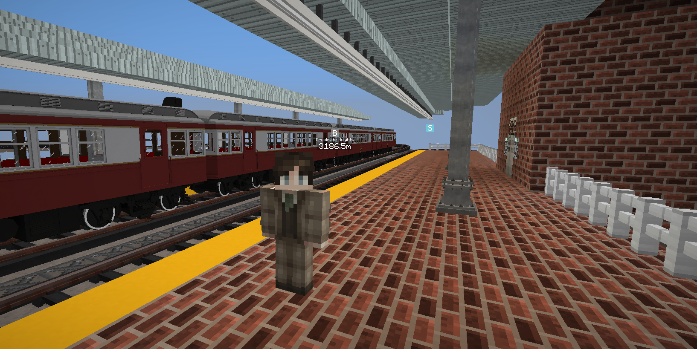

// FOUNDED 1902
BRUCE I: THE MAYOR (1940s)
After founding San Dingo in 1902, Bruce I oversaw the massive industrial boom of the 1940s. Shown here at the Rockport Pacific terminal during the height of the steam-powered era.
Industrial Era // 1902-1962
// CURRENT YEAR: 1965
BRUCE II: THE ARCHITECT
Taking the mantle in 1962, Bruce II moved the nation into the modern era. As lead architect, he redesigned the skyline and established the New Haven Transit Authority (NHTA).
Modern Era // 1962-PresentDevelopment Showcase
[YOUTUBE VIDEO PLAYER]
Watch the environmental transitions and 1965 world-building in action.
Legacy Assets

Lucille & Survival Kit
Custom 3D prop modeling for environmental storytelling and narrative events.